As the new sanctuary rises brick by brick, its finished rooms are already filled with something just as important: children learning, right here in Kalisizo Town Council.
Why We Teach
Long before the sanctuary's roof was finished, the completed classrooms of our new church building were already put to work. Today they hold a growing group of children from the Kalisizo community — seated on simple wooden benches, learning their letters and numbers on chalkboards propped against brick walls still waiting for plaster.
This is deliberate. We believe a church that builds a house for worship should also build a house for learning. Our teachers and volunteers give their time to make sure that while the building around them is still under construction, no child's education has to wait.
Support the School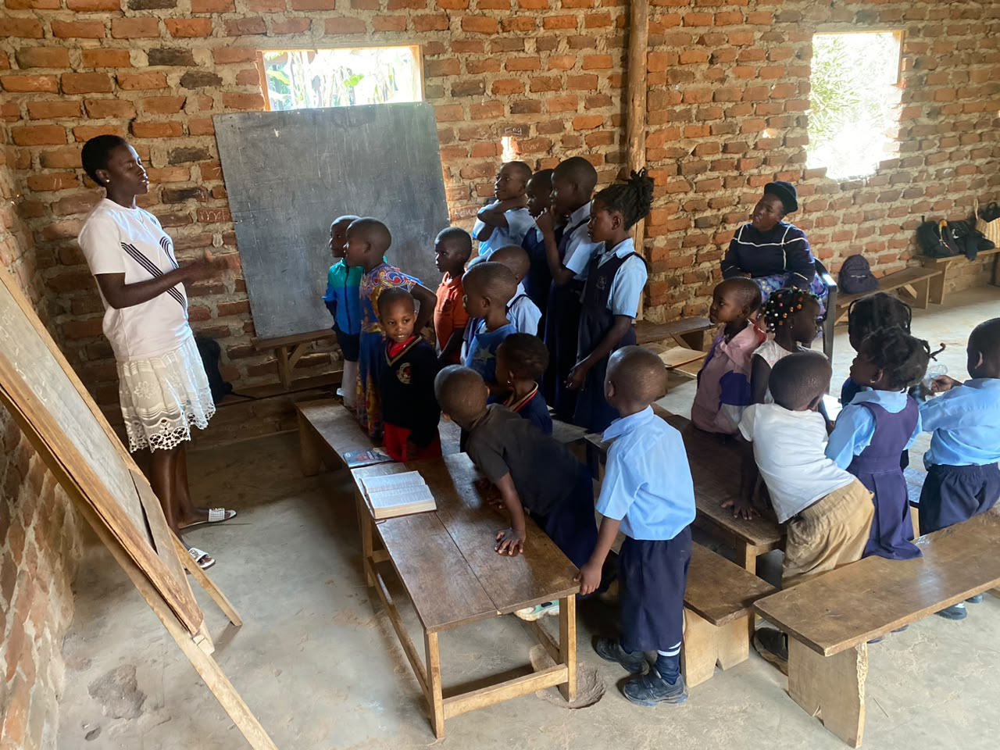
Inside the Classroom
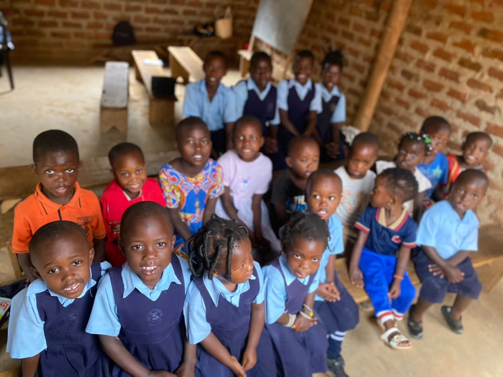
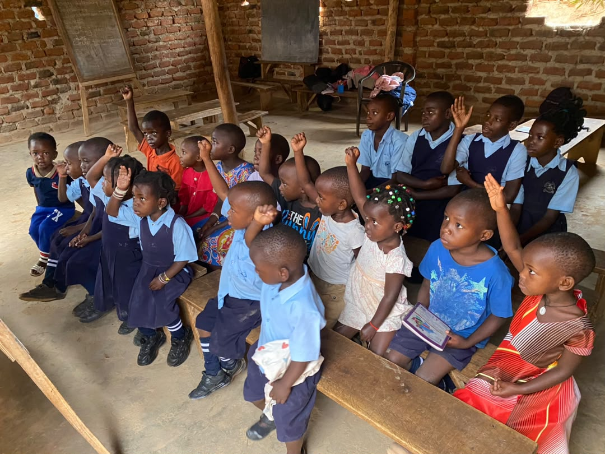
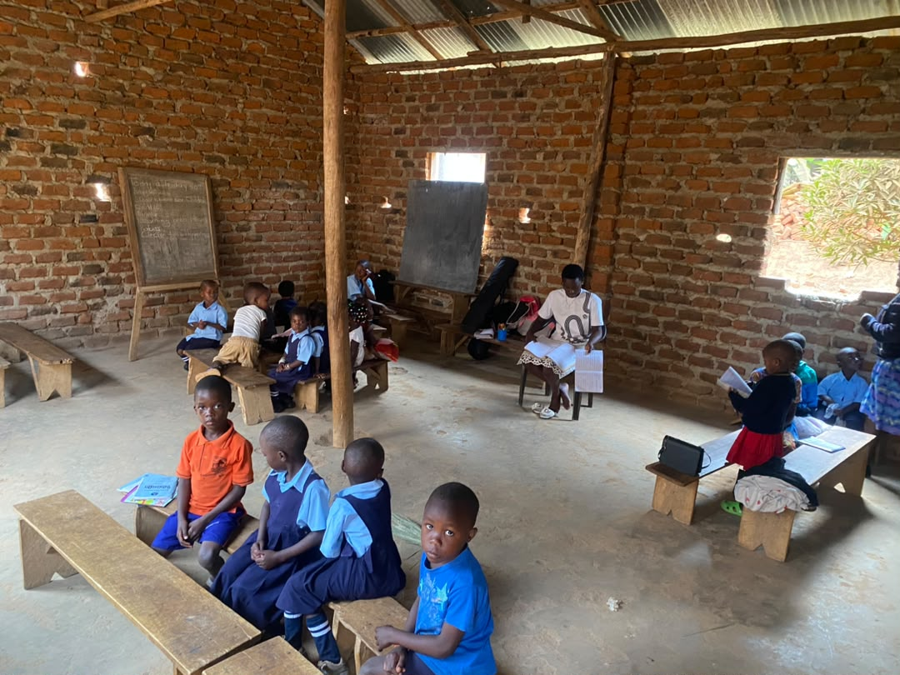
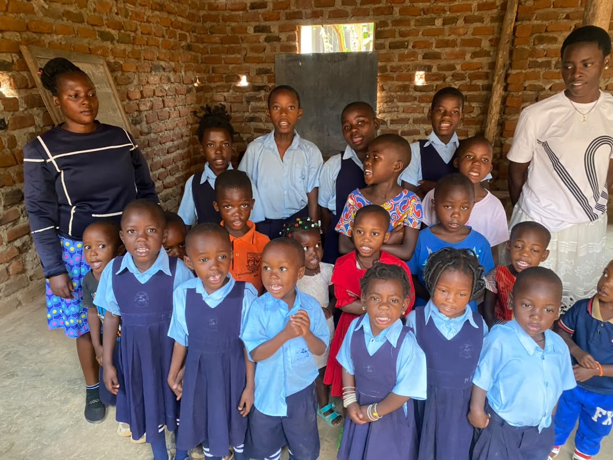
Meet a Few of Our Students
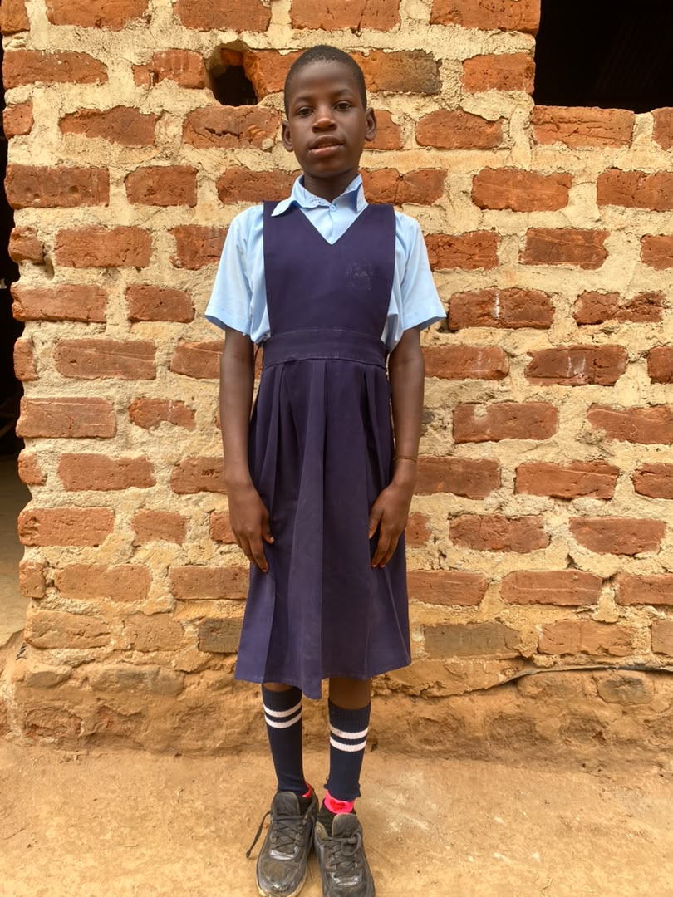
One of our primary-level students, proud in uniform outside the new classroom block.
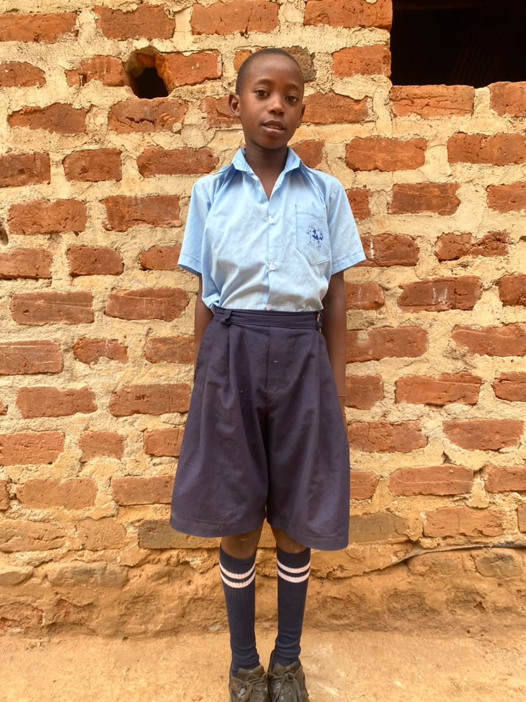
Learning steadily, term by term, alongside classmates from across Kalisizo.
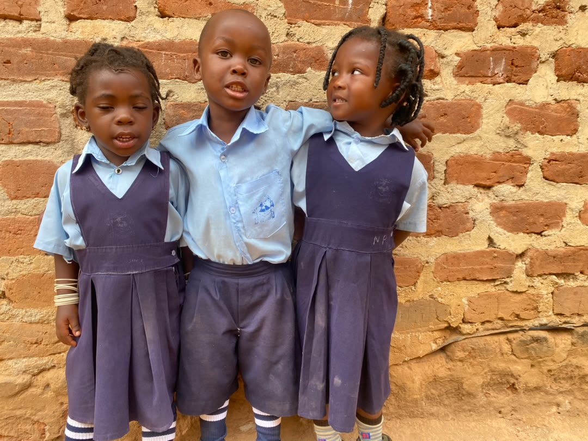
The youngest learners — building friendships as much as they're building their alphabet.
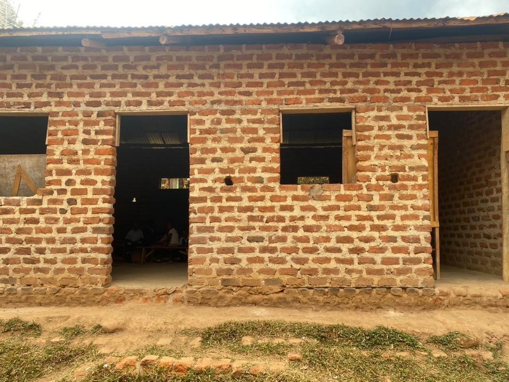
THE CLASSROOM BLOCK — COMPLETED SECTIONWhere Class Is Held
The school shares its home with the new sanctuary. While the main worship hall is still open to the sky, the classroom wing beside it already has its roof, doors, and windows in place — and children fill it every school day.
It's a small but telling picture of how this congregation builds: not waiting for everything to be finished before putting it to good use.
See the Full Building Story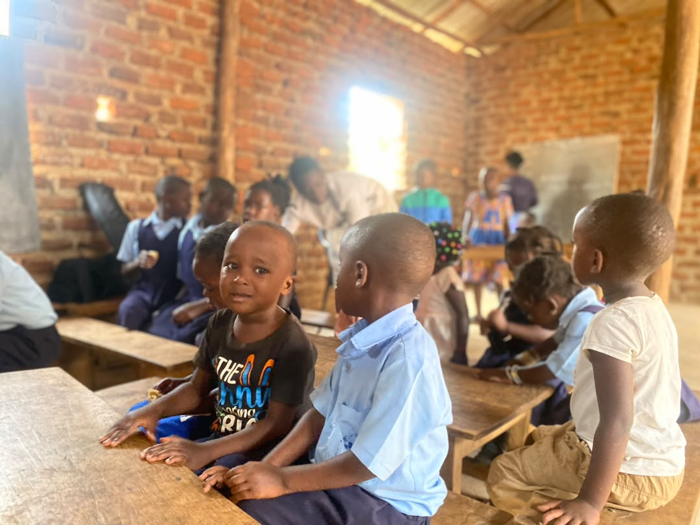
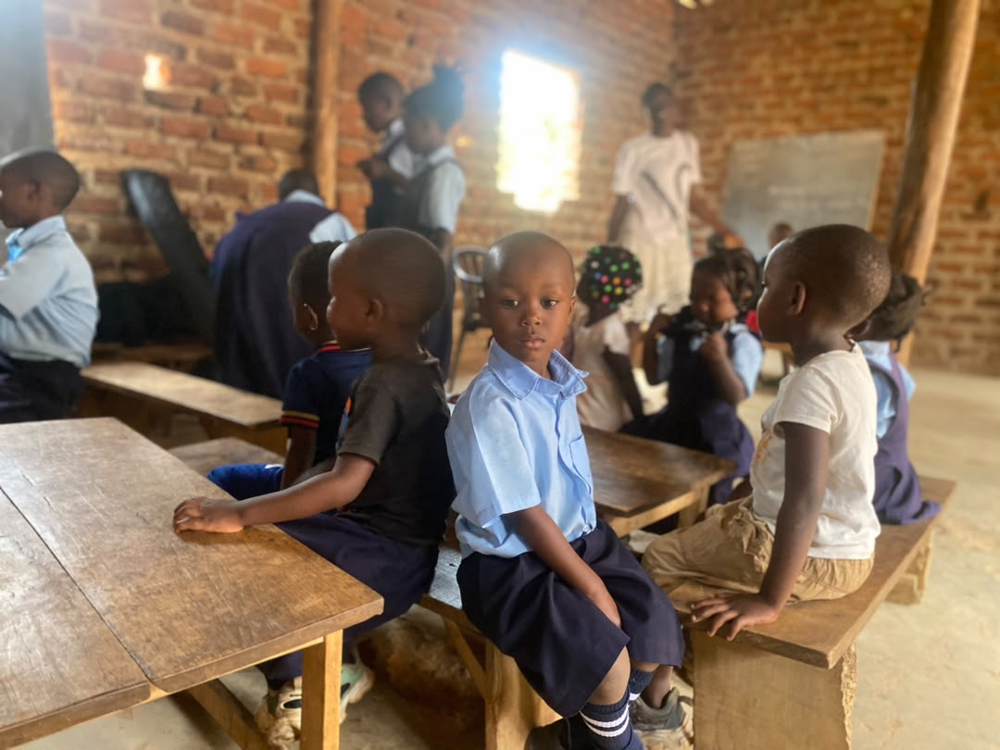
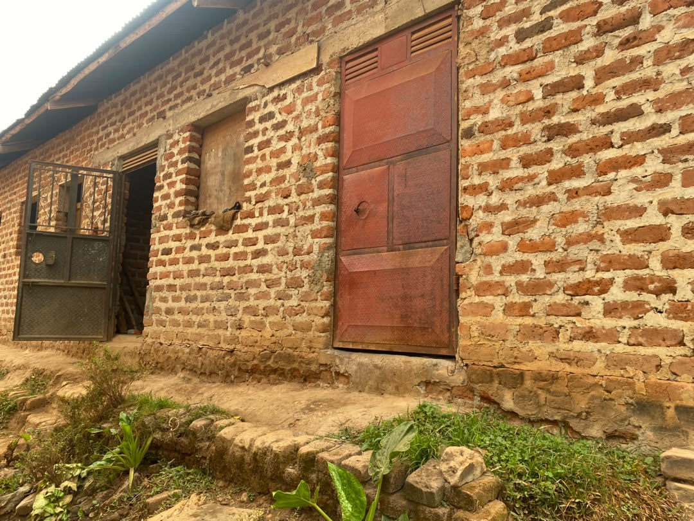